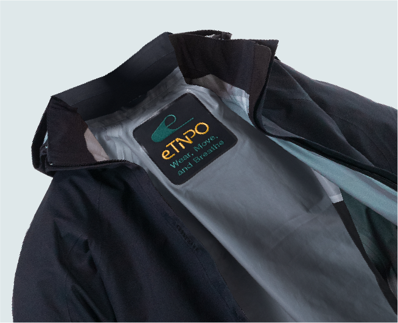
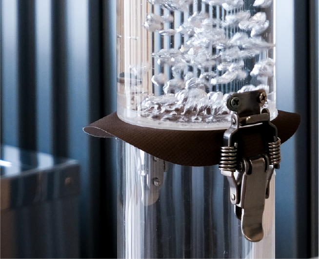
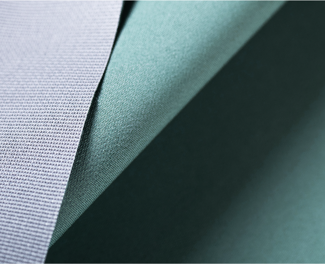

eTINPO's waterproof and breathable membrane, with its outstanding waterproof performance, breathability, and eco-friendly properties, can be widely applied across various fields, including:
eTINPO's waterproof and breathable membrane, with its outstanding waterproof performance, breathability, and eco-friendly properties, can be widely applied across various fields, including:

Ideal for outdoor performance apparel, waterproof and breathable jackets, sportswear, gloves, and footwear materials. It perfectly balances comfort and all-weather protection, offering exceptional waterproofing, breathability, and weather resistance.
Ideal for medical gowns, surgical gowns, and waterproof pads. It provides waterproof performance while ensuring excellent breathability, enhancing comfort and safety for healthcare professionals and patients.

eTINPO is utilized in high-efficiency membranes, effectively removing impurities. It is applicable for water purification and industrial filtration systems.

Suitable for outdoor use, including waterproof covers, sofa covers, and bedding, which enhance durability while offering excellent waterproof and breathable properties.